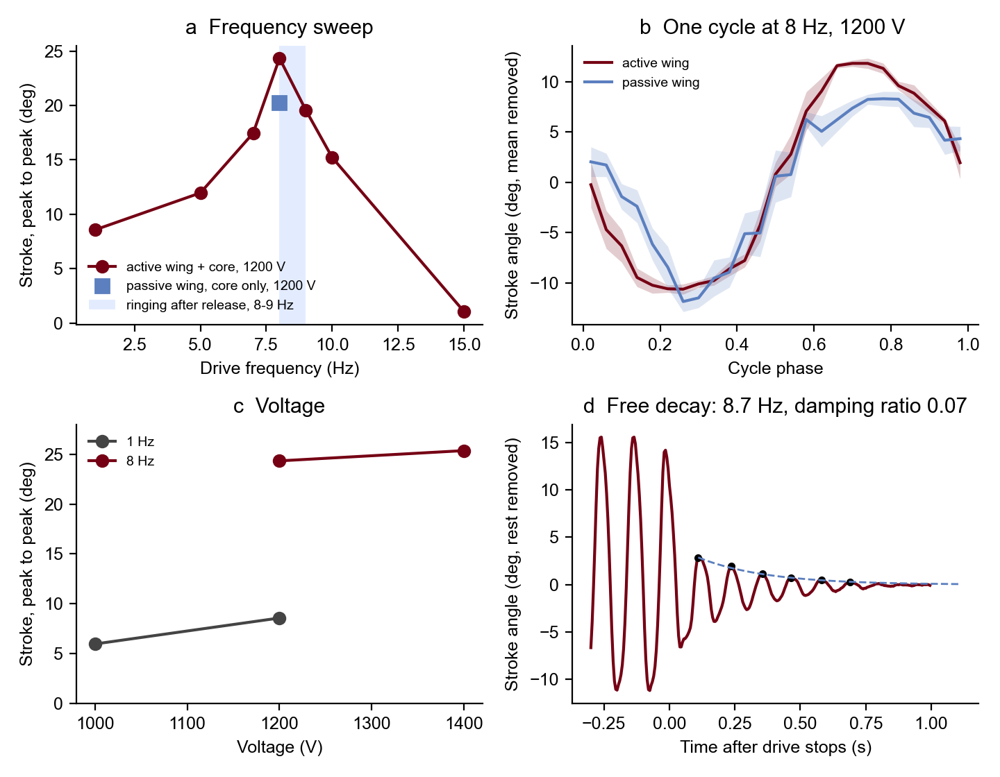

The full B-cube robot is assembled: DEA core, transmission and the active DEA wing. It flaps. It resonates at 8.7 Hz, the stroke is 24° peak to peak at 1200 V, and powering the wing gives about 20 % more stroke.
Updated 6 Nov 2026, 13:15. First analysis, done the same day. Follows the robot page and Wing in air.
What this rests on: one robot and one run per condition. Side-view high-speed video at 200 fps. The stroke is the leading-edge angle as projected in the image, not the true 3D stroke. There is no drive signal in the videos, so the timing between voltage and motion is unknown.
Short
It flaps, at resonance. The stroke peaks at 8 Hz: 24° peak to peak at 1200 V, 2.8 times the 1 Hz stroke. At 8 Hz the tip moves 23 mm peak to peak.
The natural frequency is 8.7 Hz, with a damping ratio of 0.07 (Q about 7). The free decay after the drive stops and the ringing after each 1 Hz release give the same value.
The gain is smaller than the damping allows. It is 2.8, where Q would allow about 5. A force lag of about 30 ms explains the gap. The bench sweep gave 50 ms (Wing in air), so this is a second, independent sign of the lag.
Voltage: at 1 Hz, 1000 → 1200 V gives ×1.44, which is V². At 8 Hz, 1200 → 1400 V gives only ×1.04, so something limits the stroke at resonance.
Active against unpowered wing, 8 Hz, 1200 V: 24.3° against 20.2°, +20 %. This is the first sign of an effect and needs a repeat.
The resonance is too low. The design assumed 20–25 Hz, and lift goes as about $f^2$. Raising it is now the main task, and it is mechanical: stiffness, lever ratio, moving mass.
Sweep, voltage, decay

Equation: a forced oscillator with a lagged force, $\theta/\theta_{1\,\mathrm{Hz}} \approx \dfrac{1}{\sqrt{(1-r^2)^2+(2\zeta r)^2}}\cdot\dfrac{1}{\sqrt{1+(2\pi f\tau)^2}}$, where $r = f/f_n$, $f_n$ = 8.7 Hz, $\zeta$ = 0.07 from the decay (log decrement), and $\tau$ is the force lag.
Trend: the peak sits at 8 Hz, just below $f_n$. Above 10 Hz the stroke drops fast, to about 1–3° at 15 Hz. At 1 Hz the stroke scales as V²; at resonance it saturates.
Validate: sync an LED to the drive to get the phase lag, which gives $\tau$ directly. Measure electrode resistance (RC with about 2.4 nF). Repeat active against unpowered with the same camera and zoom.
b: no sync signal, so both cycles are aligned at their lowest point. The active wing stays longer at the bottom and goes higher on the upstroke.
d: the 1400 V run stopped at 2.2 s. The peaks of the free decay give $\zeta = \delta/\sqrt{4\pi^2+\delta^2}$, with $\delta$ the mean log ratio of successive peaks.
The system works: core, transmission and active wing flap together at a clean resonance, and the motion repeats from cycle to cycle.
The force lag is now seen twice, on the bench (50 ms) and in the robot's resonance gain (about 30 ms). Voltage on the wing is a slow trim, not a control that can act within a stroke.
Frequency and stroke are below the design (8.7 Hz against 20–25 Hz; 24° against 40°), so the lift and power numbers on the robot page are not reached yet. Free flight is still far off; a tethered robot whose wing can be tuned is in reach.
The 1400 V saturation could be an end stop, the transmission, the core's maximum strain, or the run that cut out. Finding which one decides whether the stroke can grow.
Method
Phantom VEO 710L, 200 fps, side view, 0.152 mm/px from the ruler. In each frame the leading edge is the top of the dark region against a per-pixel background, at columns 400–660 px. A line fitted to it gives the stroke angle. The stroke is the median peak to peak over the driven cycles. The check below shows the tracked edge at both ends of the stroke.